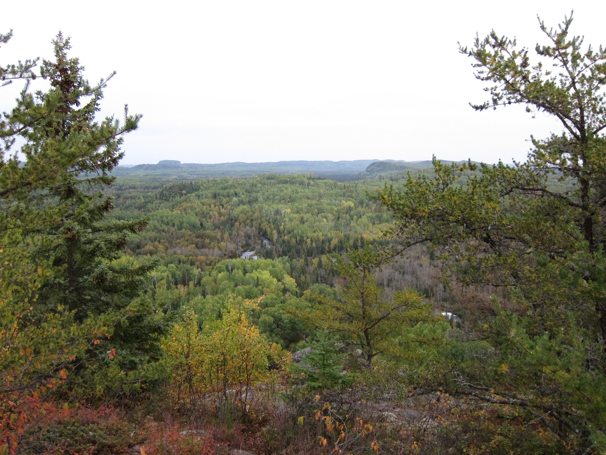
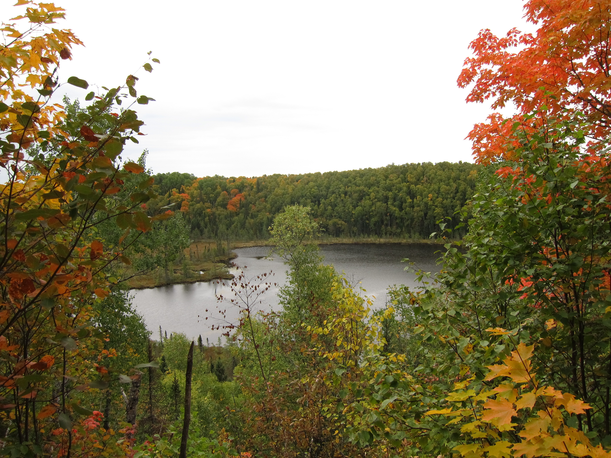
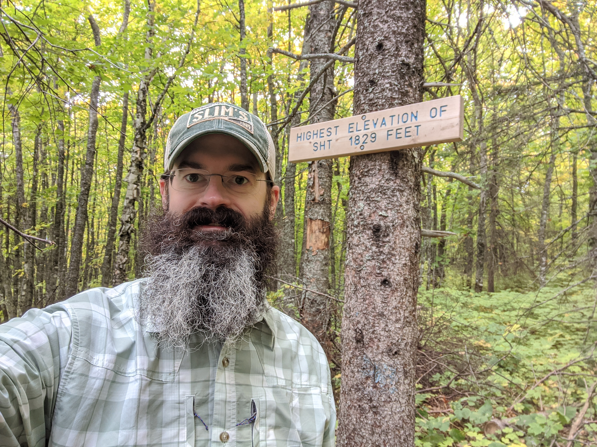
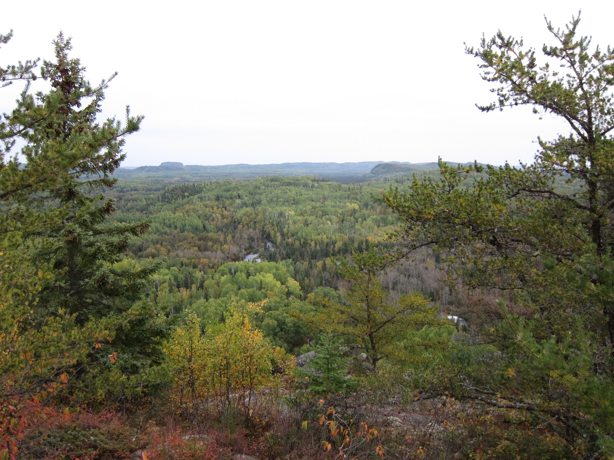
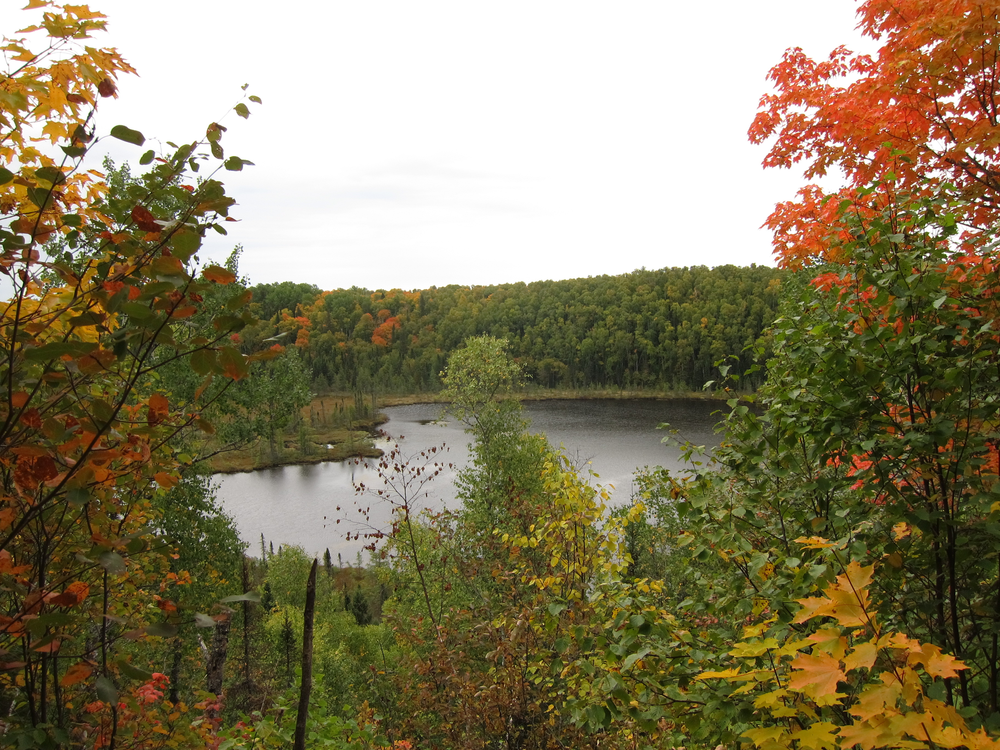
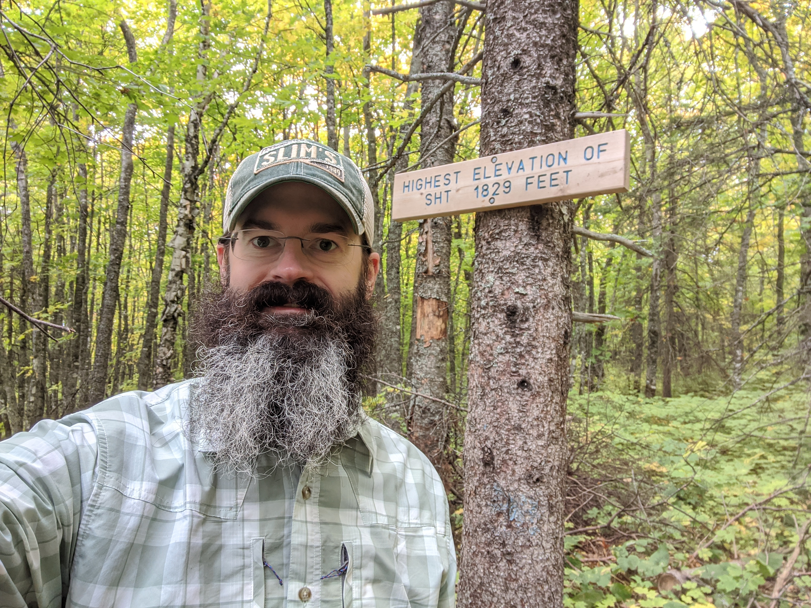

Welcome to the Journey
This website documents a 15-day solo hike along the Superior Hiking Trail from the Northern Terminus near the Canadian border to the southern trailhead. Each day includes journal notes, photos, and highlights of the trail.
 





Daily Hike Summary
| Day | Date | Distance | Elapsed Time | Elv. Min | Elv. Max | Ascent | Descent | Start Time | Stop Time | Trail Miles | Non-Trail Miles | Start | End |
|---|---|---|---|---|---|---|---|---|---|---|---|---|---|
| 1 | 9/19/20 | 21.9 | 10:52:47 | 1,100 | 1,885 | 6,623 | 6,653 | 6:52:36 AM | 5:45:23 PM | 20.6 | 1.3 | Northern Terminus + | Hazel Campsite |
| 2 | 9/20/20 | 22.2 | 10:37:27 | 455 | 1,443 | 6,307 | 6,560 | 6:52:22 AM | 5:29:49 PM | 22.2 | 0.0 | Hazel Campsite | Cliff Creek Campsite |
| 3 | 9/21/20 | 20.7 | 11:01:37 | 597 | 1,661 | 6,264 | 5,772 | 6:44:24 AM | 5:46:01 PM | 17.1 | 3.6 | Cliff Creek Campsite | South Bally Creek Pond Campsite |
| 4 | 9/22/20 | 22.7 | 11:09:45 | 694 | 1,697 | 6,235 | 6,530 | 6:20:38 AM | 5:30:23 PM | 22.7 | 0.0 | South Bally Creek Pond Campsite | West Poplar River Campsite |
| 5 | 9/23/20 | 23.0 | 11:37:18 | 559 | 1,678 | 7,578 | 7,518 | 6:26:50 AM | 6:06:08 PM | 23.0 | 0.0 | West Poplar River Campsite | Ledge Campsite |
| 6 | 9/24/20 | 20.9 | 10:21:30 | 865 | 1,625 | 6,422 | 6,121 | 6:48:16 AM | 5:09:46 PM | 20.9 | 0.0 | Ledge Campsite | Aspen Knob Campsite |
| 7 | 9/25/20 | 17.4 | 9:09:26 | 1,178 | 1,752 | 5,040 | 4,819 | 6:38:27 AM | 3:47:53 PM | 16.1 | 1.3 | Aspen Knob Campsite | Section 13 Campsite |
| 8 | 9/26/20 | 24.2 | 11:32:23 | 765 | 1,642 | 7,831 | 8,585 | 6:38:52 AM | 6:11:15 PM | 22.9 | 1.3 | Section 13 Campsite | Sout Beaver River Campsite |
| 9 | 9/27/20 | 22.4 | 10:24:05 | 489 | 1,331 | 5,834 | 6,069 | 6:57:41 AM | 5:21:46 PM | 20.9 | 1.5 | Sout Beaver River Campsite | Gooseberry Parking Lot |
| 10 | 9/28/20 | 16.4 | 8:16:54 | 611 | 1,205 | 4,411 | 4,209 | 7:05:01 AM | 3:21:55 PM | 16.4 | 0.0 | Gooseberry Parking Lot | Silver Creek Campsite |
| 11 | 9/29/20 | 23.8 | 9:48:12 | 701 | 1,648 | 6,594 | 6,081 | 6:51:17 AM | 4:39:29 PM | 23.8 | 0.0 | Silver Creek Campsite | Big Bend Campsite |
| 12 | 9/30/20 | 29.0 | 11:27:15 | 1,139 | 1,549 | 6,595 | 6,820 | 7:03:58 AM | 6:31:13 PM | 29.0 | 0.0 | Big Bend Campsite | Martin Road Trailhead |
| 13 | 10/1/20 | 19.7 | 7:57:01 | 574 | 1,352 | 4,347 | 4,537 | 7:42:12 AM | 3:39:13 PM | 18.4 | 1.3 | Martin Road Trailhead | Skyline Parkway Trailhead |
| 14 | 10/2/20 | 23.3 | 10:02:34 | 396 | 1,238 | 6,527 | 6,701 | 7:19:37 AM | 5:22:11 PM | 23.3 | 0.0 | Skyline Parkway Trailhead | Jay Cooke Parking Lot |
| 15 | 10/3/20 | 9.7 | 4:02:27 | 666 | 1,074 | 2,772 | 2,665 | 6:56:04 AM | 10:58:31 AM | 7.8 | 1.9 | Jay Cooke Parking Lot | Southern Terminus + |
| Total | 317.3 | 148:20:41 | 396 | 1,885 | 89,380 | 89,640 | 305.1 | 12.2 | Northern Terminus + | Southern Terminus + |